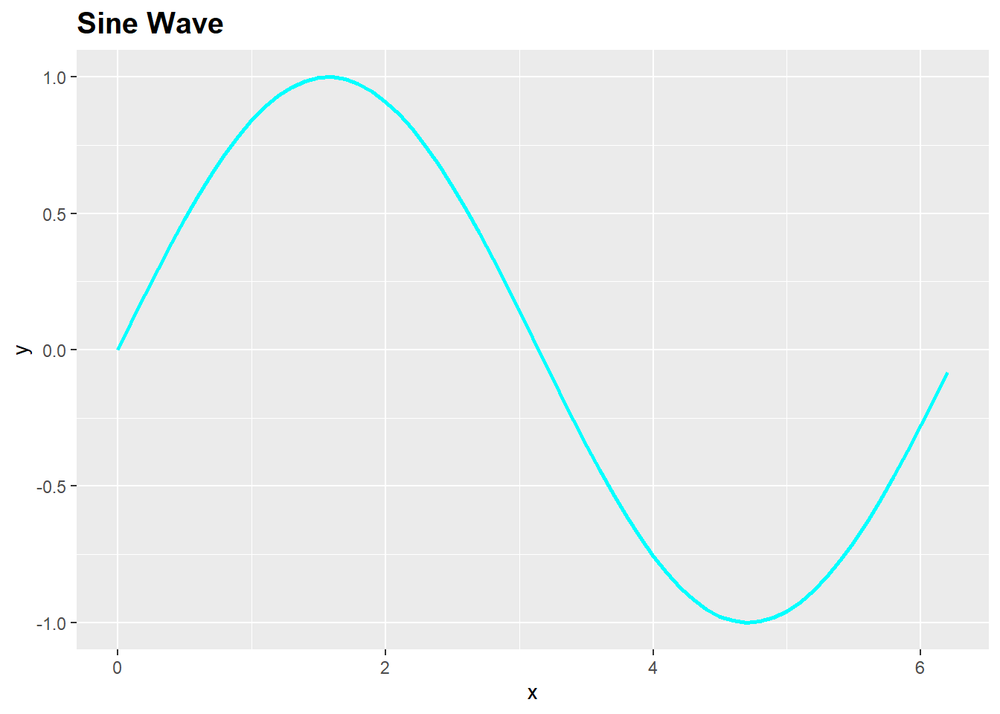
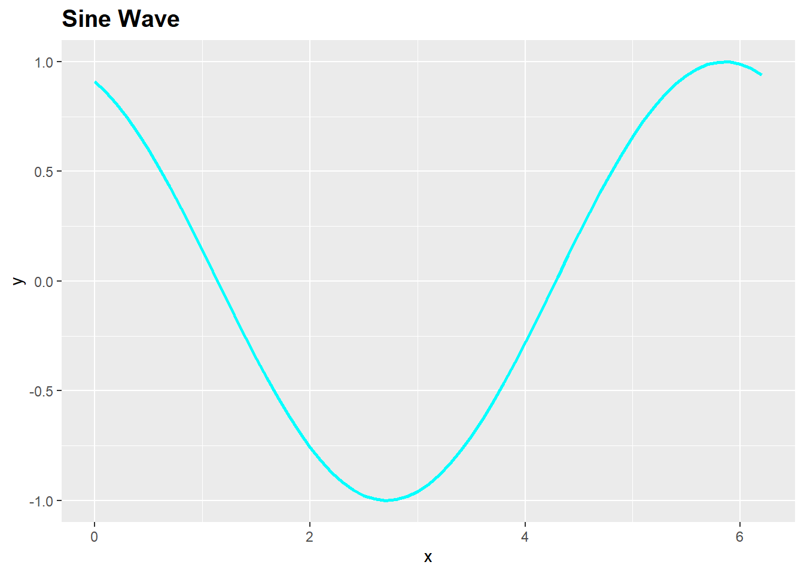

#I will be using the following libraries:
if (!require(pacman)) install.packages("pacman")Loading required package: pacmanp_load(tidyverse,hrbrthemes,plotly,ggplot2,igraph)Luke Albracht
March 21, 2024
Loading required package: pacmanBelow I am using ggplot & plotly to create sine wave plots in R.
\[ y=A*sin(Bx+C)+D \]
A - is the amplitude, which represents the maximum displacement from the equilibrium position.
B - is the frequency or angular frequency, which determines how many cycles occur in a given interval of X.
C - is the phase shift, which represents a horizontal shift along the X-axis.
D - is the vertical shift, which represents a vertical translation of the curve.
In order to graph this with ggplot or later with plotly we will have to have a data frame. In order to get that I am going to make a number of assignments so that I can input variables into my sign equation.
#Asign our variables:
A <- 1 #amplitude
B <- 4 #frequency or period
C <- 0 #phase shift or horizontial shift
D <- 0 #vertical shift
start_point <- 1 #where your curve starts
#frequency from above will be assigned again here using the seq() function in base R to create a sequence of numbers from 1 to B - in order to create a "smooth" looking line we will "by" equal to ".01" which means that we will have a point on the x axis from 1 to B every .01 increment:
period <- seq(from = start_point,
to = B*pi,
by = .1)
#plug the period variable into our dataframe and set Y equal to our equation above. - in order to get the graph to move with these variables all of them must be present in the y column of our dataframe:
df <- data.frame(x = period,
y = A*sin(period+C)+D,
label = 1:length(period),
shift = D)
#Creating a phase shifted wave to superimpose on the first wave:
df2 <- data.frame(x = period,
y = A*sin(period+(C+2))+D,
label = 1:length(period),
shift = D)
#data frame of sinusoidal wave:
df %>% arrange(x) x y label shift
1 1.0 0.84147098 1 0
2 1.1 0.89120736 2 0
3 1.2 0.93203909 3 0
4 1.3 0.96355819 4 0
5 1.4 0.98544973 5 0
6 1.5 0.99749499 6 0
7 1.6 0.99957360 7 0
8 1.7 0.99166481 8 0
9 1.8 0.97384763 9 0
10 1.9 0.94630009 10 0
11 2.0 0.90929743 11 0
12 2.1 0.86320937 12 0
13 2.2 0.80849640 13 0
14 2.3 0.74570521 14 0
15 2.4 0.67546318 15 0
16 2.5 0.59847214 16 0
17 2.6 0.51550137 17 0
18 2.7 0.42737988 18 0
19 2.8 0.33498815 19 0
20 2.9 0.23924933 20 0
21 3.0 0.14112001 21 0
22 3.1 0.04158066 22 0
23 3.2 -0.05837414 23 0
24 3.3 -0.15774569 24 0
25 3.4 -0.25554110 25 0
26 3.5 -0.35078323 26 0
27 3.6 -0.44252044 27 0
28 3.7 -0.52983614 28 0
29 3.8 -0.61185789 29 0
30 3.9 -0.68776616 30 0
31 4.0 -0.75680250 31 0
32 4.1 -0.81827711 32 0
33 4.2 -0.87157577 33 0
34 4.3 -0.91616594 34 0
35 4.4 -0.95160207 35 0
36 4.5 -0.97753012 36 0
37 4.6 -0.99369100 37 0
38 4.7 -0.99992326 38 0
39 4.8 -0.99616461 39 0
40 4.9 -0.98245261 40 0
41 5.0 -0.95892427 41 0
42 5.1 -0.92581468 42 0
43 5.2 -0.88345466 43 0
44 5.3 -0.83226744 44 0
45 5.4 -0.77276449 45 0
46 5.5 -0.70554033 46 0
47 5.6 -0.63126664 47 0
48 5.7 -0.55068554 48 0
49 5.8 -0.46460218 49 0
50 5.9 -0.37387666 50 0
51 6.0 -0.27941550 51 0
52 6.1 -0.18216250 52 0
53 6.2 -0.08308940 53 0
54 6.3 0.01681390 54 0
55 6.4 0.11654920 55 0
56 6.5 0.21511999 56 0
57 6.6 0.31154136 57 0
58 6.7 0.40484992 58 0
59 6.8 0.49411335 59 0
60 6.9 0.57843976 60 0
61 7.0 0.65698660 61 0
62 7.1 0.72896904 62 0
63 7.2 0.79366786 63 0
64 7.3 0.85043662 64 0
65 7.4 0.89870810 65 0
66 7.5 0.93799998 66 0
67 7.6 0.96791967 67 0
68 7.7 0.98816823 68 0
69 7.8 0.99854335 69 0
70 7.9 0.99894134 70 0
71 8.0 0.98935825 71 0
72 8.1 0.96988981 72 0
73 8.2 0.94073056 73 0
74 8.3 0.90217183 74 0
75 8.4 0.85459891 75 0
76 8.5 0.79848711 76 0
77 8.6 0.73439710 77 0
78 8.7 0.66296923 78 0
79 8.8 0.58491719 79 0
80 8.9 0.50102086 80 0
81 9.0 0.41211849 81 0
82 9.1 0.31909836 82 0
83 9.2 0.22288991 83 0
84 9.3 0.12445442 84 0
85 9.4 0.02477543 85 0
86 9.5 -0.07515112 86 0
87 9.6 -0.17432678 87 0
88 9.7 -0.27176063 88 0
89 9.8 -0.36647913 89 0
90 9.9 -0.45753589 90 0
91 10.0 -0.54402111 91 0
92 10.1 -0.62507065 92 0
93 10.2 -0.69987469 93 0
94 10.3 -0.76768581 94 0
95 10.4 -0.82782647 95 0
96 10.5 -0.87969576 96 0
97 10.6 -0.92277542 97 0
98 10.7 -0.95663502 98 0
99 10.8 -0.98093623 99 0
100 10.9 -0.99543625 100 0
101 11.0 -0.99999021 101 0
102 11.1 -0.99455259 102 0
103 11.2 -0.97917773 103 0
104 11.3 -0.95401925 104 0
105 11.4 -0.91932853 105 0
106 11.5 -0.87545217 106 0
107 11.6 -0.82282859 107 0
108 11.7 -0.76198358 108 0
109 11.8 -0.69352508 109 0
110 11.9 -0.61813711 110 0
111 12.0 -0.53657292 111 0
112 12.1 -0.44964746 112 0
113 12.2 -0.35822928 113 0
114 12.3 -0.26323179 114 0
115 12.4 -0.16560418 115 0
116 12.5 -0.06632190 116 0 x y label shift
1 1.0 0.14112001 1 0
2 1.1 0.04158066 2 0
3 1.2 -0.05837414 3 0
4 1.3 -0.15774569 4 0
5 1.4 -0.25554110 5 0
6 1.5 -0.35078323 6 0
7 1.6 -0.44252044 7 0
8 1.7 -0.52983614 8 0
9 1.8 -0.61185789 9 0
10 1.9 -0.68776616 10 0
11 2.0 -0.75680250 11 0
12 2.1 -0.81827711 12 0
13 2.2 -0.87157577 13 0
14 2.3 -0.91616594 14 0
15 2.4 -0.95160207 15 0
16 2.5 -0.97753012 16 0
17 2.6 -0.99369100 17 0
18 2.7 -0.99992326 18 0
19 2.8 -0.99616461 19 0
20 2.9 -0.98245261 20 0
21 3.0 -0.95892427 21 0
22 3.1 -0.92581468 22 0
23 3.2 -0.88345466 23 0
24 3.3 -0.83226744 24 0
25 3.4 -0.77276449 25 0
26 3.5 -0.70554033 26 0
27 3.6 -0.63126664 27 0
28 3.7 -0.55068554 28 0
29 3.8 -0.46460218 29 0
30 3.9 -0.37387666 30 0
31 4.0 -0.27941550 31 0
32 4.1 -0.18216250 32 0
33 4.2 -0.08308940 33 0
34 4.3 0.01681390 34 0
35 4.4 0.11654920 35 0
36 4.5 0.21511999 36 0
37 4.6 0.31154136 37 0
38 4.7 0.40484992 38 0
39 4.8 0.49411335 39 0
40 4.9 0.57843976 40 0
41 5.0 0.65698660 41 0
42 5.1 0.72896904 42 0
43 5.2 0.79366786 43 0
44 5.3 0.85043662 44 0
45 5.4 0.89870810 45 0
46 5.5 0.93799998 46 0
47 5.6 0.96791967 47 0
48 5.7 0.98816823 48 0
49 5.8 0.99854335 49 0
50 5.9 0.99894134 50 0
51 6.0 0.98935825 51 0
52 6.1 0.96988981 52 0
53 6.2 0.94073056 53 0
54 6.3 0.90217183 54 0
55 6.4 0.85459891 55 0
56 6.5 0.79848711 56 0
57 6.6 0.73439710 57 0
58 6.7 0.66296923 58 0
59 6.8 0.58491719 59 0
60 6.9 0.50102086 60 0
61 7.0 0.41211849 61 0
62 7.1 0.31909836 62 0
63 7.2 0.22288991 63 0
64 7.3 0.12445442 64 0
65 7.4 0.02477543 65 0
66 7.5 -0.07515112 66 0
67 7.6 -0.17432678 67 0
68 7.7 -0.27176063 68 0
69 7.8 -0.36647913 69 0
70 7.9 -0.45753589 70 0
71 8.0 -0.54402111 71 0
72 8.1 -0.62507065 72 0
73 8.2 -0.69987469 73 0
74 8.3 -0.76768581 74 0
75 8.4 -0.82782647 75 0
76 8.5 -0.87969576 76 0
77 8.6 -0.92277542 77 0
78 8.7 -0.95663502 78 0
79 8.8 -0.98093623 79 0
80 8.9 -0.99543625 80 0
81 9.0 -0.99999021 81 0
82 9.1 -0.99455259 82 0
83 9.2 -0.97917773 83 0
84 9.3 -0.95401925 84 0
85 9.4 -0.91932853 85 0
86 9.5 -0.87545217 86 0
87 9.6 -0.82282859 87 0
88 9.7 -0.76198358 88 0
89 9.8 -0.69352508 89 0
90 9.9 -0.61813711 90 0
91 10.0 -0.53657292 91 0
92 10.1 -0.44964746 92 0
93 10.2 -0.35822928 93 0
94 10.3 -0.26323179 94 0
95 10.4 -0.16560418 95 0
96 10.5 -0.06632190 96 0
97 10.6 0.03362305 97 0
98 10.7 0.13323204 98 0
99 10.8 0.23150983 99 0
100 10.9 0.32747444 100 0
101 11.0 0.42016704 101 0
102 11.1 0.50866146 102 0
103 11.2 0.59207351 103 0
104 11.3 0.66956976 104 0
105 11.4 0.74037589 105 0
106 11.5 0.80378443 106 0
107 11.6 0.85916181 107 0
108 11.7 0.90595474 108 0
109 11.8 0.94369567 109 0
110 11.9 0.97200750 110 0
111 12.0 0.99060736 111 0
112 12.1 0.99930939 112 0
113 12.2 0.99802665 113 0
114 12.3 0.98677196 114 0
115 12.4 0.96565778 115 0
116 12.5 0.93489506 116 0When I was making assignments to the equation and data frame above I noticed I was receiving errors when the starting point and endpoints are changed. The direction of increment is determined based on the sign of to - from. If to is greater than from, the increment will be positive, causing theta values to increase from from to to. If to is less than from, the increment will be negative, causing theta values to decrease from from to to. So we need to create a function that dynamically adjusts our increment variable depending on the sign of B and our startpoint.
#Asign our variables:
A <- 1 #amplitude
B <- 2 #frequency or period
C <- 0 #phase shift or horizontial shift
D <- 0 #vertical shift (displacment)
start_point <- 0 #where your curve starts
#Adjustment function for "by" variable:
generate_increment <- function(x, start_point, B) {
if (B - start_point < 0) {
return(-1 * x)
} else if (B - start_point > 0) {
return(1 * x)
} else {
return(0) # In case B - start_point equals 0
}
}
#Setting increment to ".1" & setting shift placement based on startpoint:
adj_by <- generate_increment(.1,start_point,B)
adj_shift <- generate_increment(1,start_point,B)
#frequency from above will be assigned again here using the seq() function in base R to create a sequence of numbers from 1 to B - in order to create a "smooth" looking line we will "by" equal to ".01" which means that we will have a point on the x axis from 1 to B every .01 increment:
period <- seq(from = start_point,
to = B*pi,
by = adj_by)
#plug the period variable into our dataframe and set Y equal to our equation above. - in order to get the graph to move with these variables all of them must be present in the y column of our dataframe:
df <- data.frame(x = period,
y = A*sin(period+C)+D,
label = 0:(length(period)-1)*adj_shift,
shift = D,
wave = "Sine Wave Base")
#Creating a phase shifted wave to superimpose on the first wave:
df2 <- data.frame(x = period,
y = A*sin(period+(C+2))+D,
label = 0:(length(period)-1)*adj_shift,
shift = D,
wave = "Sine Wave Shifted")
#Creating a cosine wave to superimpose on the other waves:
df3 <- data.frame(x = period,
y = A*cos(period+C)+D,
label = 0:(length(period)-1)*adj_shift,
shift = D,
wave = "Cosine Wave")#Showing the basic ggplots of each graph:
#Pipe the data frame:
Wave1 <- df %>%
ggplot(aes(x=x,y=y))+
geom_line(color= "cyan", size = 1)+
labs(title = "Sine Wave")+
theme(plot.title = element_text(face = "bold",size = 15))Warning: Using `size` aesthetic for lines was deprecated in ggplot2 3.4.0.
ℹ Please use `linewidth` instead.
Wave2 <- df2 %>%
ggplot(aes(x=x,y=y))+
geom_line(color= "cyan", size = 1)+
labs(title = "Sine Wave")+
theme(plot.title = element_text(face = "bold",size = 15))
Wave2
[1] 1 2 3 4 5 6 7 8 9 10 11 12 13 14 15 16 17 18 19 20 21 22 23 24 25
[26] 26 27 28 29 30 31 32 33 34 35 36 37 38 39 40 41 42 43 44 45 46 47 48 49 50
[51] 51 52 53 54 55 56 57 58 59 60 61 62 63#Pull all data together to get labels:
all_data <- rbind(df,df2,df3)
#Summarize and list wave labels to character vector for legend below:
wave_type <- all_data %>%
group_by(wave) %>%
summarise() %>%
list() %>%
unlist()
wave_type <- wave_type %>% as.character()
p <- ggplot() +
geom_line(data = df,
aes(x = x, y = y, color = wave), # Map color aesthetic and provide legend label
size = 1,
linetype = "solid") +
geom_line(data = df2,
aes(x = x, y = y, color = wave), # Map color aesthetic and provide legend label
size = 1,
linetype = "solid") +
geom_line(data = df3,
aes(x = x, y = y, color = wave), # Map color aesthetic and provide legend label
size = 1,
linetype = "solid") +
geom_point(data = df,
aes(x = x, y = y, frame = label)) +
geom_line(data = df,
aes(x = x, y = shift),
color = "purple",
size = 1,
linetype = "dashed") +
labs(color = "Wave Type") + # Provide a common legend title
scale_color_manual(values = c("cyan", "red","yellow"), labels = wave_type) # Define color palette and legend labelsWarning in geom_point(data = df, aes(x = x, y = y, frame = label)): Ignoring
unknown aesthetics: frame#Add plotly interaction and legend:
p <- ggplotly(p) %>%
plotly::layout(title = 'Wave Graph - Superimposed',plot_bgcolor = "#e5ecf6")
p